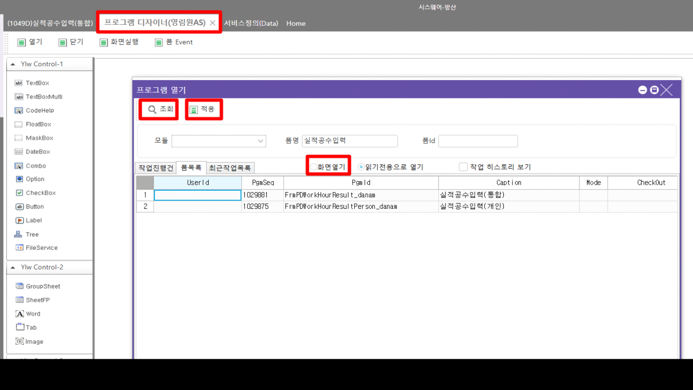
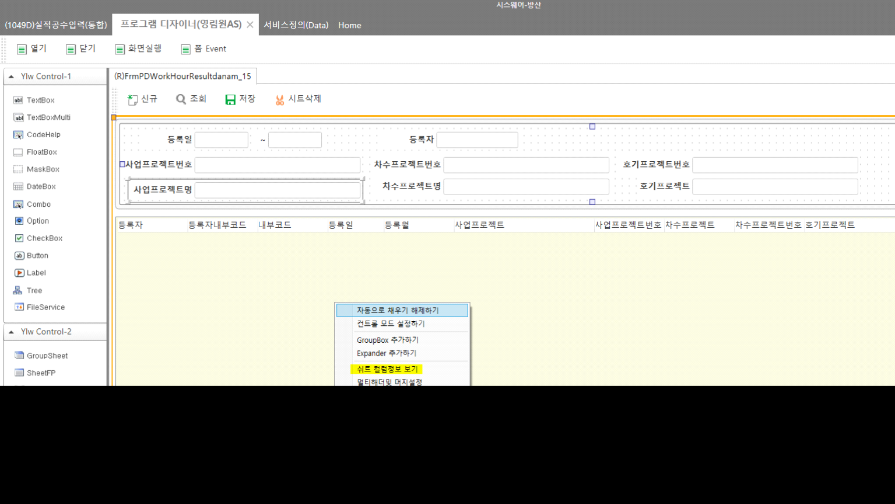
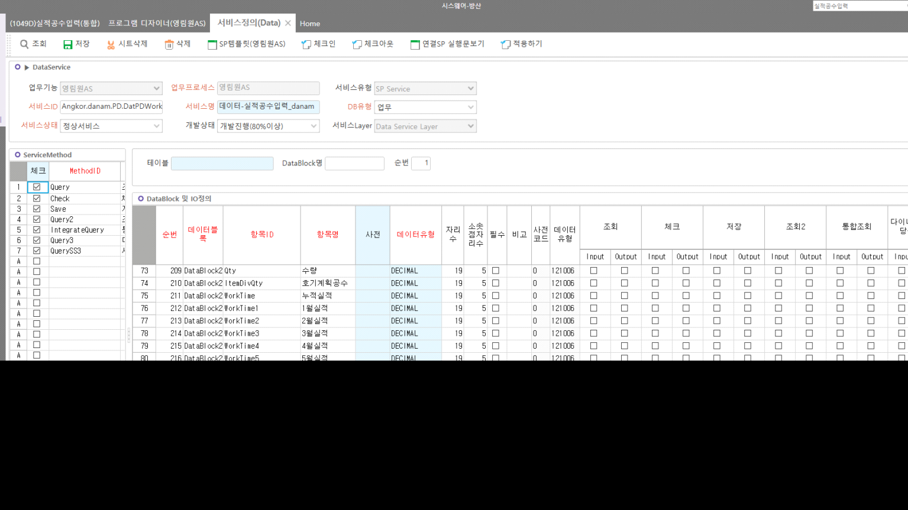

단암 개발툴
시스웨어-단암(TEMP)
http://61.250.183.1:8400/KsystemSvc/
http://61.250.183.1:8200 별도 설치 (실서버에서 개발해도 되긴함)
작업 후 패치는 원격들어가서 해야함
1번 DB의 DANAM이 여기 서버임
시스웨어-방산 접속
-
프로그램 디자이너(영림원AS)
-
툴바 - 열기
-
화면 조회
-
화면열기 옵션 클릭 후 Active Row 설정 후 적용 툴바 클릭
-

- 우클릭 - 쉬트 컬럼정보 보기 - 기존 개발툴과 동일하게 시트에 값 추가

- 조회 버튼 클릭 -> [프로그램 Method등록] 다이얼로그 뜸 -> 수정하려는 Service에 Active Row 설정 후 서비스 정의 툴바 클릭

-
화면과 동일하게 체크아웃 후 컬럼 추가 => '행 헤더' 우클릭 후 항목 추가 클릭
- 간혹 동일한 값이 여러개 추가되는 경우가 있음 => 확인해보고 중복된 건 삭제

- 수정 후 화면, 서비스 모두 툴바 '적용하기' 클릭 및 체크인